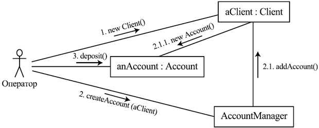

Динамические диаграммы описывают происходящие в
системе процессы. К ним относятся диаграммы деятельности, сценариев, диаграммы взаимодействия и диаграммы состояний.
Деятельность изображается в виде прямоугольника с
закругленными сторонами, слева и справа, помеченного именем деятельности.
Потоки данных показываются в виде стрелок.
Синхронизации двух видов — развилки (forks) и слияния (joins) —
показываются жирными короткими линиями (кто-то может посчитать их и тонкими
закрашенными прямоугольниками), к которым сходятся или от которых расходятся
потоки данных. Кроме синхронизаций, на диаграммах деятельности могут быть
показаны разветвления потоков данных, связанных с выбором того или иного
направления в зависимости от некоторого условия. Такие разветвления
показываются в виде небольших ромбов.
Диаграмма может быть поделена на несколько
горизонтальных или вертикальных областей, называемых дорожками (swimlanes).
Дорожки служат для группировки деятельностей в соответствии с выполняющими их
подразделением организации, ролью, приложением, подсистемой и пр.
Диаграммы деятельности могут заменять часто
используемые диаграммы потоков данных (см. лекцию 4),
поэтому применяются достаточно широко. Пример такой диаграммы показан на рис.16.9
Рис. 16.9. Диаграмма активности
Диаграммы сценариев (или диаграммы последовательности, sequence diagrams) показывают возможные сценарии обмена сообщениями или вызовами во времени между различными компонентами системы (здесь имеются в виду архитектурные компоненты, компоненты в широком смысле — это могут быть компоненты развертывания, обычные объекты, подсистемы и пр.). Эти диаграммы являются подмножеством специального графического языка — языка диаграмм последовательностей сообщений (Message Sequence Charts, MSC), который был придуман раньше UML и достаточно долго развивается параллельно ему.Компоненты,
участвующие во взаимодействии, изображаются прямоугольниками вверху
диаграммы. От каждого компонента вниз идет вертикальная линия,
называемая его линией жизни. Считается, что ось времени
направлена вертикально вниз. Интервалы времени, в которые компонент
активен, т.е. управление находится в одной из его операций, представлены
тонким прямоугольником, для которого линия жизни компонента является
осью симметрии.

Рис. 16.10. Пример диаграммы сценария открытия счета
Передача сообщения или вызов изображаются стрелкой от компонента-источника к компоненту-приемнику. Возврат управления показан пунктирной стрелкой, обратной к соответствующему вызову.
Эти диаграммы используются достаточно часто, например, при детализации сценариев, входящих в варианты использования. Пример такой диаграммы изображен на рис. 16.10.
Диаграммы взаимодействия (collaboration diagrams) показывают ту же информацию, что и диаграммы сценариев,
но привязывают обмен сообщениями/вызовами не к времени, а к связям
между компонентами. Пример такой диаграммы представлен на рис. 16.11.

Рис. 16.11. Диаграмма взаимодействия, соответствующая диаграмме сценария на рис. 6.10
На диаграмме изображаются компоненты в виде прямоугольников и связи между ними. Вдоль связей могут передаваться сообщения, показываемые в виде небольших стрелок, параллельных связи. Стрелки нумеруются в соответствии с порядком происходящих событий. Нумерация может быть иерархической, чтобы показать вложенность действий друг в друга (т.е. если вызов некоторой операции имеет номер 1, то вызовы, осуществляемые при выполнении этой операции, будут нумероваться как 1.1, 1.2, и т.д.).
Диаграммы взаимодействия используются довольно редко.
Диаграммы состояний (statechart diagrams) показывают возможные состояния отдельных компонентов или системы в целом, переходы между ними в ответ на какие-либо события и выполняемые при этом действия.Состояния показываются в виде прямоугольников с закругленными углами, переходы — в виде стрелок. Начальное состояние представляется как небольшой темный кружок, конечное — как пустой кружок с концентрически вложенным темным кружком. Вы могли обратить внимание на темный кружок на диаграмме деятельности на рис. 16.9 — он тоже изображает начальное состояние: дело в том, что диаграммы деятельности являются диаграммами состояний специального рода, а деятельности — частный случай состояний. Пример диаграммы состояний приведен на рис. 16.12.
Состояния могут быть устроены иерархически: они могут
включать в себя другие состояния, даже целые отдельные диаграммы
вложенных состояний и переходов между ними. Пребывая в таком состоянии,
система находится ровно в одном из его подсостояний. На рис. 6.12 почти все изображенные состояния являются подсостояниями состояния Site. Кроме того, в нижней части диаграммы три состояния объединены, чтобы показать, что переход по действию cancel возможен в каждом из них и приводит в одно и то же состояние Basket.

Рис. 6.12. Пример диаграммы состояний, моделирующей сайт Интернет-магазина
Состояние может декомпозироваться и на параллельные подсостояния. Они изображаются как области внутри объемлющего состояния, разделенные пунктирными линиями, их аналогом на диаграммах деятельности являются дорожки. Пребывая в объемлющем состоянии, система должна находиться одновременно в каждом из его параллельных подсостояний.
Помимо показанных на диаграмме состояний изображаемая подсистема может иметь глобальные (в ее рамках) переменные, хранящие какие-то данные. Значения этих переменных являются общими частями всех изображаемых состояний.
На рис. 16.12 примерами переменных являются список видимых пользователем товаров, items, и набор уже отобранных товаров с количеством для каждого, корзина, basket.
Переходы могут происходить между состояниями одного уровня, но могут также вести из некоторого состояния в подсостояние соседнего или, наоборот, из подсостояния в некоторое состояние, находящее на том же уровне, что и объемлющее состояние.
На переходе между состояниями указываются следующие данные:
Например, из состояния Categories на рис. 16.12 можно выйти, выполнив команду браузера "Назад". Она соответствует событию back, инициирующему переход в состояние Start page. Другой переход из состояния Categories происходит при выборе категории товаров пользователем. Соответствующее событие имеет параметр — выбранную категорию. Оно изображено как choose(category).
Условие перехода показывается в его метке в квадратных скобках.
На рис. 38 примером условного перехода является переход из состояния Basket в состояние Payment Method. Он выполняется, только если пользователь выполняет команду "Оплатить" (событие buy) и при этом в его корзине есть хотя бы один товар.
Действие показывается в метке перехода после слеша (символа ‘ / ’). При этом изменения значений переменных перечисляются в начале, затем, после знака ‘ ^ ’, указывается вызов операции.
Например, на рис. 6.12 при выборе пользователем категории товаров происходит переход из состояния Categories в Items list. При этом список товаров, видимый пользователю, инициализируется списком товаров выбранной категории.
Диаграммы состояний используются часто, хотя требуется довольно много усилий, чтобы разработать их с достаточной степенью детальности.